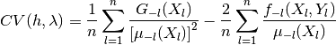
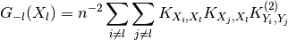
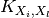
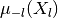

statsmodels.nonparametric.kernel_density.KDEMultivariateConditional.imse¶
-
KDEMultivariateConditional.imse(bw)[source]¶ The integrated mean square error for the conditional KDE.
Parameters: bw: array_like
The bandwidth parameter(s).
Returns: CV: float
The cross-validation objective function.
Notes
For more details see pp. 156-166 in [R22]. For details on how to handle the mixed variable types see [R23].
The formula for the cross-validation objective function for mixed variable types is:

where

where  is the multivariate product kernel and  is the leave-one-out estimator of the pdf.
 is the convolution kernel.
is the convolution kernel.The value of the function is minimized by the
_cv_lsmethod of the GenericKDE class to return the bw estimates that minimize the distance between the estimated and “true” probability density.References
[R22] (1, 2) Racine, J., Li, Q. Nonparametric econometrics: theory and practice. Princeton University Press. (2007) [R23] (1, 2) Racine, J., Li, Q. “Nonparametric Estimation of Distributions with Categorical and Continuous Data.” Working Paper. (2000)